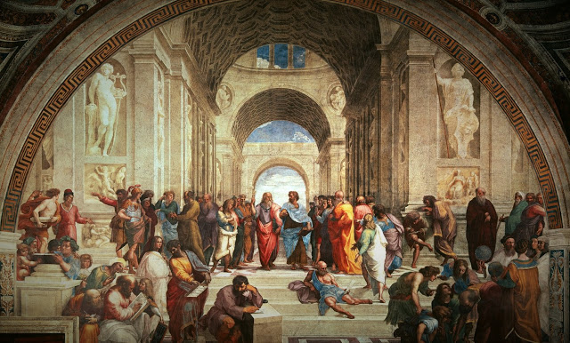

Hábito alimenticio
Origen de la dieta vegana
El origen de la dieta vegana es uno de los temas de más rabiosa actualidad ya que desde hace muchos años la dieta vegana se consideraba algo para hippies, pero los más recientes estudios confirman sus múltiples beneficios para el deporte y la salud.
Nuestro origen sobre la dieta vegana y vegetariana se remonta a muchísimos siglos atrás, a tiempos ancestrales, aproximadamente al siglo VI antes de cristo, los documentos más recientes que poseemos sobre una dieta vegana o vegetariana estricta hacen referencia a los seguidores del Orfismo, una religión de la antigua Grecia que fundo Orfeo. Los seguidores de dicha religión no comían nada de origen animal.
 La base de esta religion se basa en la reencarnación, por lo que ellos mismos tenían prohibido comer o hacer sacrificios animales, por ello se negaban a comer animales ya que de lo contrario consumían energías negativas para su cuerpo y alma. Además de gozar de una gran salud física, vivían en una edad dorada de conocimiento y armonía con los animales y el medio ambiente. Uno de los principales filósofos de la época que empezó a evitar el consumo de carne fue Pitágoras el cual desarrollo aun más sus teorías sobre la reencarnación e incluso fundó »the pythagorean way of life» a los que le siguieron otros grandes nombres como Platón, Jenocrátes o Plutarco. Y más tarde grandes nombres como Leonardo Va Vinci, Tyron , Voltaire o Rousseau se sumaron a esta misma idea.Dieta vengana en las antiguas civilizaciones
Ya hemos visto que la dieta vegana se remonta a muchísimos siglos atrás pero ¿qué es lo que comían estas civilizaciones? Además sabemos que estas civilizaciones ancestrales gozaban de una anatomía casi perfecta a nivel de desarrollo muscular, de hecho el ideal estético griego hace referencia a esta era de la civilización. Los principales alimentos básicos de la dieta vegana de las antiguas civilizaciones de las cuales no sólo hago referencia a la griega, a las mayas, incas, china, egipcia e india, son los siguientes:
- Trigo y cebada
- Frutas y nueces
- Maíz, arroz y lentejas
- Papas y quinoa
- Garbanzos y soja(soya)
Dieta vengana en la actualidad
Los datos que dan origen a en la sociedad más contemporánea datan a 1944 como la primera fundación de sociedad vegana en Leicester ( Inglaterra) y la primera sociedad vegetariana se remonta al año 1847 también en Inglaterra. Cuanto más retrocedemos en el tiempo, los motivos de llevar dicha dieta se basan en espirituales y metafísicos, sin embargo cuanto más avanzamos en el tiempo, los motivos se derivan más a la ética y salud.